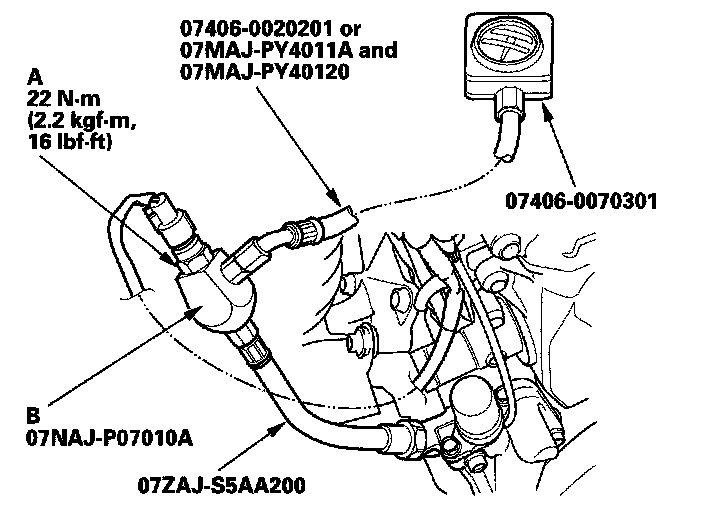
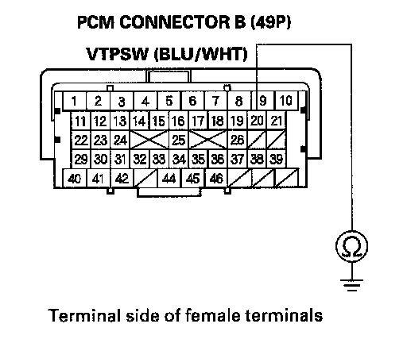

DTC Troubleshooting
DTC P2646: Rocker Arm Oil Pressure Switch Circuit Low VoltageSpecial Tools Required
- Pressure gauge adapter 07NAJ-P07010A
- A/T low pressure gauge W/panel 07406-0070301
- A/T pressure hose 07406-0020201
- A/T pressure hose, 2,210 mm 07MAJ-PY4011A
- A/T pressure adapter 07MAJ-PY40120
- Oil pressure hose 07ZAJ-S5AA200
NOTE: Before you troubleshoot, record all freeze data and any on-board snapshot, and review the general troubleshooting information.
1. Check the engine oil level.
Is the engine oil level OK?
YES - Go to step 2.
NO - Adjust the engine oil to the proper level, then go to step 19.
2. Turn the ignition switch ON (II).
3. Clear the DTC with the HDS.
4. Do the VTEC TEST in the INSPECTION MENU with the HDS.
Is the result OK?
YES - Intermittent failure, the system is OK at this time. Check for poor connections or loose terminals at the rocker arm oil pressure switch, the rocker arm oil control solenoid, and the PCM.
NO - Go to step 5.
5. Turn the ignition switch OFF.
6. Disconnect the rocker arm oil pressure switch 2P connector.
7. Turn the ignition switch ON (II).
8. Check the VTEC PRES SW in the DATA LIST with the HDS.
Is ON indicated?
YES - Go to step 14.
NO - Go to step 9.
9. Turn the ignition switch OFF.

10. Remove the rocker arm oil pressure switch (A), install the special tools as shown, then install the rocker arm oil pressure switch on the oil pressure gauge adapter (6).
NOTE: Install the parts in the reverse order of removal with a new O-ring.
11. Start the engine.
12. Do the VTEC TEST in the INSPECTION MENU with the HDS.
13. Check the oil pressure.
Does the oil pressure increase to at least 392 kPa (4.0 kgf/sq.cm, 56.9 psi)?
YES - Replace the rocker arm oil pressure switch, then go to step 18.
NO - Inspect the VTEC system. If it is OK. Replace the rocker arm oil control solenoid , then go to step 18.
14. Turn the ignition switch OFF.
15. Jump the SCS line with the HDS.
16. Disconnect PCM connector B (49P).

17. Check for continuity between PCM connector terminal B20 and body ground.
Is there continuity?
YES - Repair short in the wire between the PCM (B20) and the rocker arm oil pressure switch, then go to step 18.
NO - Go to step 25.
18. Reconnect all connectors.
19. Turn the ignition switch ON (II).
20. Reset the PCM with the HDS.
21. Do the PCM idle learn procedure.
22. Do the VTEC TEST in the INSPECTION MENU with the HDS.
23. Check for Temporary DTCs or DTCs with the HDS.
Is DTC P2646 indicated?
YES - Check for poor connections or loose terminals at the rocker arm oil pressure switch and the PCM, then go to step 1.
NO - Go to step 24.
24. Monitor the OBD STATUS for DTC P2646 in the DTCs MENU with the HDS.
Does the screen indicate PASSED?
YES - Troubleshooting is complete. If any other Temporary DTCs or DTCs were indicated in step 23, go to the indicated DTCs troubleshooting.
NO - If the screen indicates FAILED, check for poor connections or loose terminals at the rocker arm oil pressure switch and the PCM, then go to step 1. If the screen indicates NOT COMPLETED, keep idling until a result comes on.
25. Reconnect all connectors.
26. Update the PCM if it does not have the latest software, or substitute a known-good PCM.
27. Do the VTEC TEST in the INSPECTION MENU with the HDS.
28. Check for Temporary DTCs or DTCs with the HDS.
Is DTC P2646 indicated?
YES - Check for poor connections or loose terminals at the rocker arm oil pressure switch and the PCM. If the PCM was updated, substitute a known-good PCM, then recheck. If the PCM was substituted, go to step 1.
NO - Go to step 29.
29. Monitor the OBD STATUS for DTC P2646 in the DTCs MENU with the HDS.
Does the screen indicate PASSED?
YES - If the PCM was updated, troubleshooting is complete. If the PCM was substituted, replace the original PCM. If any other Temporary DTCs or DTCs were indicated in step 28, go to the indicated DTCs troubleshooting.
NO - If the screen indicates FAILED, check for poor connections or loose terminals at the rocker arm oil pressure switch and the PCM. If the PCM was updated, substitute a known-good PCM, then recheck. If the PCM was substituted, go to step 1. If the screen indicates NOT COMPLETED, keep idling until a result comes on.